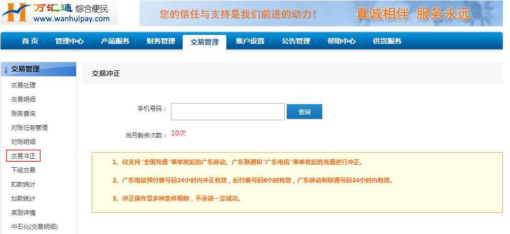

交易冲正
1. 在“交易管理”选择【交易冲正】，进行冲正申请操作：
选择【交易冲正】在手机号码中输入所需要冲正的号码点击查询，选择需要冲正的手机号码进行冲正，冲正次数每月为10次。

*温馨提示：每位代理点用户每月仅能冲正10次。冲正功能仅支持：广东移动、广东联通、广东电信手机号码，广东电信冲正功能仅支持在广东电信菜单中所充值的号码，广东电信预付费号码24小时内冲正有效，后付费号码6小时申请有效，全国充值的广东电信号码不支持冲正，用户发起冲正申请，受运营商条件限制，不承诺一定成功。